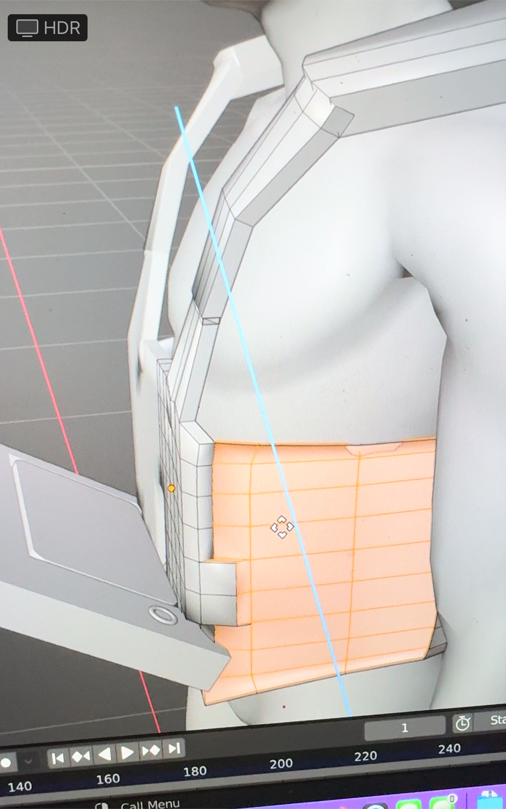

Protyping with Blender
Learning Blender in three weeks definitely presented its challenges. However, the process taught me how to observe my product in the environment and include the experience within my prototype.
My first challenge was designing a physical experience associated with my FEMA project. At first, I was looking at buildings and abandon houses to showcase the situational awareness ascept. However, I am an absolute beginner to Blender, so my professor pushed me to design a physical product to assocate the FEMA worker while they are on the field. I was inspired by designs of vest with large pouch, so I decided to design a vest that allowed the FEMA worker to carry his iPAD while multitasking and being hands free whem needed.

First, I explored tutorials to help me create the vest. For the most part, it was easy to follow; using the physics tool to sew the vest presented diffculty becuase it is a lot of physics element that I have not studied in probably twenty years. With the time constraint, I pivot to focus on the pouch component.


My professor worked me through a low fidelty on a way to design it. First, I used the cube to build out the pouch, using extude (E), sizing (S), and rotate (R). Then, I measured it to the vest.econdly, I design a rope-like structure to controll the flap of the vest.


I downloaded the ipad from blenerkit and added it inside the pouch. All of this took about a day and a half to two days.
Once I was satisfied with the pouch design. I went pack to play with the vest. I could not get the sewing feature in the physics component to create a former fiting vest, so I started to manipulate it using the perspective tool.

Once I was satisfied, I began to explore the materials. I was looking for a thick police officer vest material, but I could not find it. I played with the army camo fabric. FEMA workers primarily wear blue so I created a blue monochromatic camo.
For the controller, I followed Apple's asthetic, using a black rubber material, and I added rope-like material.
I went back to thickness the vest using the extude (E) option.

I tried to add my designs in but my computer continuously shutdown. I will add it to the blog once my laptop always me too!